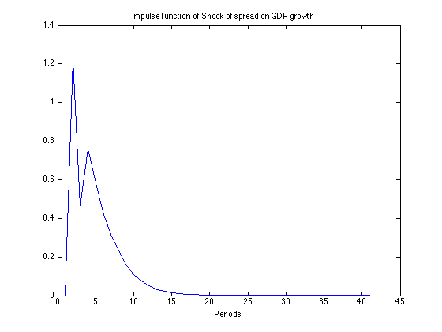

Contents
MACROECONOMETRICS PS#2
Camilo José Pecha and Gábor Kocsis
clc clear all load dataPS2
Problem 1
DESCRIPTIVE TEXT
%calculating the spread spread=gs10(16:length(gs10),1)-ffund; %creating within-quarter averages avspread=zeros(238,1); for i=4:3:715 avspread((i-1)/3,1)=(spread(i-3,1)+spread(i-2,1)+spread(i-1,1))/3; end avspread=avspread(1:length(avspread)-1,1); %calcualting the growth rate of real gdp deltagdp=zeros(length(gdp)/2,1); for i=31:(length(gdp)-1) deltagdp(i,1)=400*(gdp(i+1,1)-gdp(i,1))/gdp(i,1); end deltagdp=deltagdp(31:length(deltagdp),1);
Problem 2
GDPlags=lagmatrix(deltagdp,[0 1 2 3 4]); SPREADlags=lagmatrix(avspread,[0 1 2 3 4]); %creating X and Y %Y=first colm t from GDP and Spread %GDP5, GDP6 GDP7 .... GDP267 %Spr5, Spr6 Spr7 .... Spr267 %X %first lag %1....1 %GDP4...GDP267 %Spr4...Spr267 %second lag %GDP3...GDP267 %Spr3...Spr267 %third lag %GDP2...GDP267 %Spr4...Spr267 %fourth lag %GDP1...GDP267 %Spr1...Spr267 cons=ones(length(SPREADlags)-4,1); Y=[GDPlags(5:length(SPREADlags),1) SPREADlags(5:length(SPREADlags),1)]; X=[cons GDPlags(5:length(SPREADlags),2) SPREADlags(5:length(SPREADlags),2) ... first lag GDPlags(5:length(SPREADlags),3) SPREADlags(5:length(SPREADlags),3) ... second lag GDPlags(5:length(SPREADlags),4) SPREADlags(5:length(SPREADlags),4) ... third lag GDPlags(5:length(SPREADlags),5) SPREADlags(5:length(SPREADlags),5)]; ... fourth lag phi1=inv(X'*X)*X'*Y;
Problem 3
%Granager for GDP %First we compute the regression of $GDP_t=c+\alpha GDP_{t-1}+\beta %GDP_{t-2}+\gamma GDP_{t-3}+\delta GDP_{t-4} %Second we compute the regression of GDP on lags of GDP and lags of Spread YG=[Y(:,1)]; XG0=[cons X(:,2) X(:,4) X(:,6) X(:,8)]; %the regression for the restricted model b0=inv(XG0'*XG0)*XG0'*YG; %predicted GDP from restricted GDP0hat=XG0*b0; error0=(YG-GDP0hat).^2; RSS0=sum(error0) %Unrestricted regression b1=inv(X'*X)*X'*Y; %predicted GDP from unrestricted GDP1hat=X*b1; error1=(YG-GDP1hat(:,1)).^2; RSS1=sum(error1) RSS_VAR=RSS1; T=length(Y); %F-test S=((RSS0-RSS1)/4)/(RSS1/(T-2*4-1)) if S>2.3719 disp('Reject null hypothesis ' ) else disp('Fail to reject null hypothesis ' ) end %Now the proper exercise for Spread YS=[Y(:,2)]; XS0=[cons X(:,3) X(:,5) X(:,7) X(:,9)]; %the regression for the restricted model b0=inv(XS0'*XS0)*XS0'*YS; %predicted GDP from restricted SPR0hat=XS0*b0; error0=(YS-SPR0hat).^2; RSS0=sum(error0) %Unrestricted regression b1=inv(X'*X)*X'*Y; %predicted GDP from unrestricted SPR1hat=X*b1; error1=(YS-SPR1hat(:,2)).^2; RSS1=sum(error1) %F-test S=((RSS0-RSS1)/4)/(RSS1/(T-2*4-1)) if S>2.3719 disp('Reject null hypothesis ' ) else disp('Fail to reject null hypothesis ' ) end
RSS0 =
2.5900e+03
RSS1 =
2.3519e+03
S =
5.6707
Reject null hypothesis
RSS0 =
121.7510
RSS1 =
112.5332
S =
4.5871
Reject null hypothesis
Problem 4
%Forcasting cons=ones(length(SPREADlags)-4,1); Ybench=[GDPlags(5:length(SPREADlags),1) SPREADlags(5:length(SPREADlags),1)]; Xbench=[cons GDPlags(5:length(SPREADlags),2) SPREADlags(5:length(SPREADlags),2) ... first lag GDPlags(5:length(SPREADlags),3) SPREADlags(5:length(SPREADlags),3) ... second lag GDPlags(5:length(SPREADlags),4) SPREADlags(5:length(SPREADlags),4) ... third lag GDPlags(5:length(SPREADlags),5) SPREADlags(5:length(SPREADlags),5)]; ... fourth lag [N k]=size(Ybench); cut=122; residuals=zeros(N-cut-4,2); dgdp_hat=zeros(N-cut-4,2); for t=cut:N-4 b_AR1=inv(Xbench(1:t,:)'*Xbench(1:t,:))*Xbench(1:t,:)'*Ybench(1:t,:); % One period ahead forecast y_hat1=Xbench(t+1,:)*b_AR1; dgdp_hat(t-cut+1,1)=y_hat1(1); residuals(t-cut+1,1)=Y(t+1,1)-y_hat1(1); % 2 period ahead forecast (YOU NEED IT FOR THE 4 PERIOD FORECAST) X2= [1 y_hat1 Ybench(t,:) Ybench(t-1,:) Ybench(t-2,:)]; y_hat2=X2*b_AR1; % 3 period ahead forecast X3= [1 y_hat2 y_hat1 Ybench(t,:) Ybench(t-1,:)]; y_hat3=X3*b_AR1; %4 period ahead forecast X4= [1 y_hat3 y_hat2 y_hat1 Ybench(t,:)]; y_hat4=X4*b_AR1; dgdp_hat(t-cut+1,2)=y_hat4(1); %Replace values of t+1 by the forecast for SPREAD residuals(t-cut+1,2)=Ybench(t+4,1)-y_hat4(1); end y=Ybench(cut:N-4,1); figure(1) plot(dgdp_hat(:,1),'--','LineWidth',1),hold on; plot(Ybench(122:N,1)); title('Forcasted (one period) vs Real GDPrate') xlabel('observations'); hleg = legend('Forcasted values','Actual growth ofGDP',... 'Location','South'); % Make the text of the legend italic and color it brown set(hleg,'FontAngle','italic','TextColor',[.3,.2,.1]); hold off figure(2) plot(dgdp_hat(:,2),'--','LineWidth',1),hold on; plot(Ybench(122:N,1)); title('Forcasted (four periods) vs Real GDPrate') xlabel('observations'); hleg = legend('Forcasted values','Actual growth ofGDP',... 'Location','South'); hold off
Problem 5
%Compute the MSE of the forcast
MSE_VAR1=sum(residuals(:,1).^2)
MSE_VAR4=sum(residuals(:,2).^2)
MSE_VAR1 = 769.4330 MSE_VAR4 = 811.3922
Problem 6
compute a AR(1) and compare its MSE with the obtained in the previews problem
% AR(1) process cons=ones(length(SPREADlags)-4,1); Y_AR1=[GDPlags(5:length(SPREADlags),1)]; X_AR1=[cons GDPlags(5:length(SPREADlags),2)]; b_AR1=inv(X_AR1'*X_AR1)*X_AR1'*Y_AR1; re_AR1=Y_AR1-X_AR1*b_AR1; % RSS of AR(1) RSS_AR1=re_AR1'*re_AR1; if RSS_VAR-RSS_AR1>0 disp 'VAR4 does not improve upon AR1' else disp 'VAR4 improves upon AR1' end
VAR4 improves upon AR1
Problem 7
%Impulse response functions of the Wold shock phi1=(inv(Xbench'*Xbench)*Xbench'*Ybench)'; phi1=phi1(:,2:end); [n m]=size(phi1); A=[phi1; eye(m-2) zeros(6,2)]; A=A(1:8,:); h_max=40; impulse_gdp=zeros(h_max+1,2); impulse_spread=zeros(h_max+1,2); for i=0:h_max a=A^i; impulse_gdp(i+1,1)=a(1,1); %Shock of GDP on GDP impulse_gdp(i+1,2)=a(1,2); %Shock of SPREAD on GDP impulse_spread(i+1,1)=a(2,1); %Shock of GDP on SPREAD impulse_spread(i+1,2)=a(2,2); %Shock of SPREAD on SPREAD end %Plots figure(3) plot(impulse_gdp(:,1)); title('Impulse function of Shock of GDP growth on GDP growth') xlabel('Periods'); figure(4) plot(impulse_gdp(:,2)); title('Impulse function of Shock of spread on GDP growth') xlabel('Periods'); figure(5) plot(impulse_spread(:,1)); title('Impulse function of Shock of GDP growth on spread') xlabel('Periods'); figure(6) plot(impulse_spread(:,2)); title('Impulse function of Shock of spread on spread') xlabel('Periods');